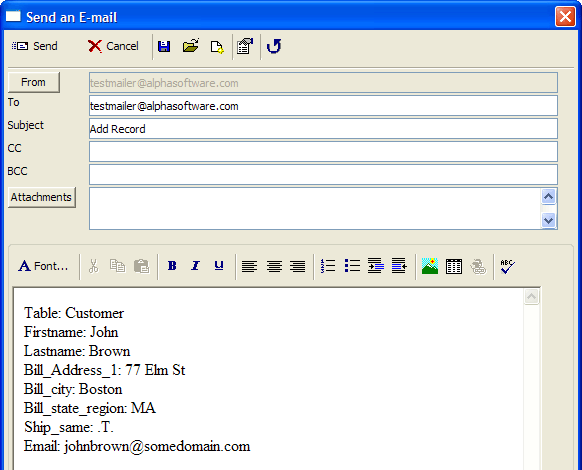

Email Automation
Alpha Anywhere provides three utilities that combine to provide opportunities for email automation.
Email Reader - allows Alpha Anywhere to receive emails
Email Action Editor - defines actions to take when emails are received
Email Filter Genie - supports the Email Action Editor by providing filtering capabilities to identify emails of interest
The types of automated email applications that you can create are illustrated by these examples.
Request a report from a remote PC via email
Add a record to a table on a remote PC via email
Play an Xbasic script on a remote PC via email
Filter incoming messages based on content
Create an action with the Email Action Editor that responds to email messages requesting a report by emailing the report back to the sender's address.
Open the Email Reader.
Click
 to open the Email Action Editor.
to open the Email Action Editor.Click
 to display the Edit Email Action
dialog box. This dialog captures three pieces of information: the expression
that the triggering event in an incoming email, the action to take, and
(in this case) the script to play.
to display the Edit Email Action
dialog box. This dialog captures three pieces of information: the expression
that the triggering event in an incoming email, the action to take, and
(in this case) the script to play.
You can directly enter the expression or click
 to display the Expression
Builder, which can display a list of email fields and previously
used field values.
to display the Expression
Builder, which can display a list of email fields and previously
used field values.
The Alpha Anywhere Email Reader looks for messages with "report request" in the subject field. When it finds a message, it responds by playing the "ReportRequest" script.
When the Email Reader receives an email that looks like this.

the ReportRequest script sends the requested report to the sender's email address.
|
ON ERROR GOTO ERROR DIM tInbox as P tInbox = table.open(cTable, FILE_RO_SHARED) tInbox.fetch_goto(nRecno) DIM body as C DIM subject as C DIM report_to_send as C DIM from as C DIM filter as C DIM filter2 as C DIM order as C DIM fn as C subject = tInbox.subject from = tInbox.from_email body = tInbox.body ' find the report name report_to_send = get_field_from_body("report name:*", body) IF report_to_send = "" ' no report specified...done END END IF ' retrieve the filter if there is one specified in the body, i.e. ' filter: state $ "CA" filter = get_field_from_body("filter:*", body) order = get_field_from_body("order:*", body) IF body <> "" DIM cReportTable as C cReportTable = a5_op_name_short_to_long(report_to_send, "REPORT") cReportTable = word(cReportTable, 2, "@", 99999) filter2 = process_filter_Fields(body, cReportTable ) IF filter2 <> "" filter = a5_Combine_filters(filter, filter2) END IF END IF ' report.send(report_to_send, "PDF", "", "","a5", from, "Here is the report you requested", "Attached is the report you requested") fn = file.temp_path_get()+remspecial(word(report_to_Send, 1, "@") )+".PDF" report.SaveAs(report_to_send,"PDF", filter, order, fn) wait_until(file.exists(fn), 1, 10) email_send(from, "Here is the report you requested", "Attached is the report you requested", fn) file.remove(fn) tInbox.close() ON ERROR GOTO 0 GOTO DONE ERROR: trace.Writeln(error_text_get() ) DONE: |
|
FUNCTION process_filter_fields as C ( body as C, report_table as C ) DIM cResult as C DIM i as N DIM word_i as C DIM field_name as C DIM value as C DIM expr as C DIM t as P IF file.filename_parse(report_table, "E") = ".ddd" report_table = file.filename_parse(report_table, "DPN")+".dbf" END IF IF file.exists(report_table) t = table.open(report_table, FILE_RO_SHARED) ELSE EXIT FUNCTION END IF FOR i = 1 TO line_count(body) 'get field name word_i = word(body, i, crlf() ) ' get the field/value pairs IF (word_i <> "") .AND. (":" $ word_i) then field_name = alltrim(word(word_i, 1, ":") ) value = alltrim(word(word_i, 2, ":", 99999) ) IF (field_name <> "") .AND. (value <> "") then DIM datatype as C IF eval_valid(field_name, report_table) datatype = eval("t." + field_name + ".type_get()") IF datatype = "C" expr = field_name + " = " + quote(value) ELSE IF datatype = "D" expr = field_name + " = {"+value+"}" ELSE IF datatype = "L" expr = field_name + " = " + iif(value = "True" .OR. value = ".T.", ".T.", ".F.") ELSE expr = field_name + " = " +value END IF cResult = a5_combine_filters(cResult, expr) END IF END IF END IF NEXT i t.close() process_filter_fields = cResult END FUNCTION |
Create an action with the Email Action Editor that responds to an email message by extracting data from the email and adding a record to a table.
Open the Email Reader.
Click
to open the Email Action Editor.Click
to display the Add Email Action
dialog box. This dialog captures three pieces of information: the expression
that the triggering event in an incoming email, the action to take, and
(in this case) the script to play.
The Alpha Anywhere Email reader looks for messages with "report request" in the subject field. When it finds a message, it responds by playing the "ReportRequest" script.
When the Email Reader receives an email that looks like this.

the AddRecord script extracts the field data from the message body and appends a new record to the Customer table.
|
' email action to add a record to a table based on contents of email ON ERROR GOTO ERROR DIM tInbox as P ' cTable & nRecno are defined automatically tInbox = table.open(cTable, FILE_RO_SHARED) tInbox.fetch_goto(nRecno) DIM body as C DIM subject as C subject = tInbox.subject body = tInbox.body DIM t as P DIM table_to_use as C table_to_use = get_field_from_body("Table:*", body) table_to_use = alltrim(table_to_use) t = table.open(table_to_use, FILE_RW_SHARED) t.enter_begin() *for_each(x, add_record(t, x), body ) t.enter_end(.T.) t.close() tInbox.close() GOTO DONE ON ERROR GOTO 0 ERROR: ' log the error trace.writeln(error_text_get() ) DONE: |
|
FUNCTION add_record as V ( t as P, x as C ) ' takes a string in the format fieldname: value and sets ' fieldname to the value specified. ' table must already be in change/enter mode DIM cEvalField as C DIM cField as C DIM cValue as C DIM field_type as C cField = alltrim(word(x,1,":") ) cValue = alltrim(word(x,2,":", 99999) ) cEvalField = "t."+cField IF eval_valid(cEvalField) field_type = eval(cEvalField+".type_get()") IF field_type = "C" .OR. field_type = "M" cEval = cEvalField + " = " +quote(cValue) ELSE IF field_type = "D" cEval = cEvalField + " = {" +cValue + "}" ELSE cEval = cEvalField + " = " +cValue END IF evaluate_template(cEval) END IF END FUNCTION |
In this case the Email Reader examines the subject lines of incoming emails for the word "runme".
The following image shows how the Edit Email Action dialog box configures this action.
When the Email Reader receives an email that looks like this.
the runme script examines the message body for a password. If the password is acceptable, it treats the remainder of the message body as Xbasic code and executes it.
|
ON ERROR GOTO ERROR DIM tInbox as P DIM body as C DIM password as C tInbox = table.open(cTable, FILE_RO_SHARED) tInbox.fetch_goto(nRecno) body = tInbox.body tInbox.close() ' look for the password string. It should be a comment in the body of ' the message which is interpreted as a script. i.e.: 'password: mypwd password = filter_string_smatch(body, "'password:*", crlf() ) IF password = "" ' no password specified.... END END IF ' get the password password = word(password, 2, ":", 9999) password = alltrim(password) IF (password <> "mypwd") then 'incorrect password END END IF ' if we get here, the password must be correct. Run the script ' the password does not need to be removed from the body, since ' it is actually just a comment evaluate_template(body) GOTO DONE ON ERROR GOTO 0 ERROR: trace.writeln(error_text_get() ) DONE: END |
Filter Messages Based on Content
In this case the Email Reader examines the subject lines of incoming emails for indications that the email is spam.
The following image shows how the Edit Email Action dialog box configures this action. This is a trivial example, but it is possible to have this expression search for multiple words in multiple fields, including the message body. You can also have many different email actions working in together.
When the Email Reader receives an email that looks like this:
The action moves the message to the Deleted folder. No additional configuration or programming is required.
See Also